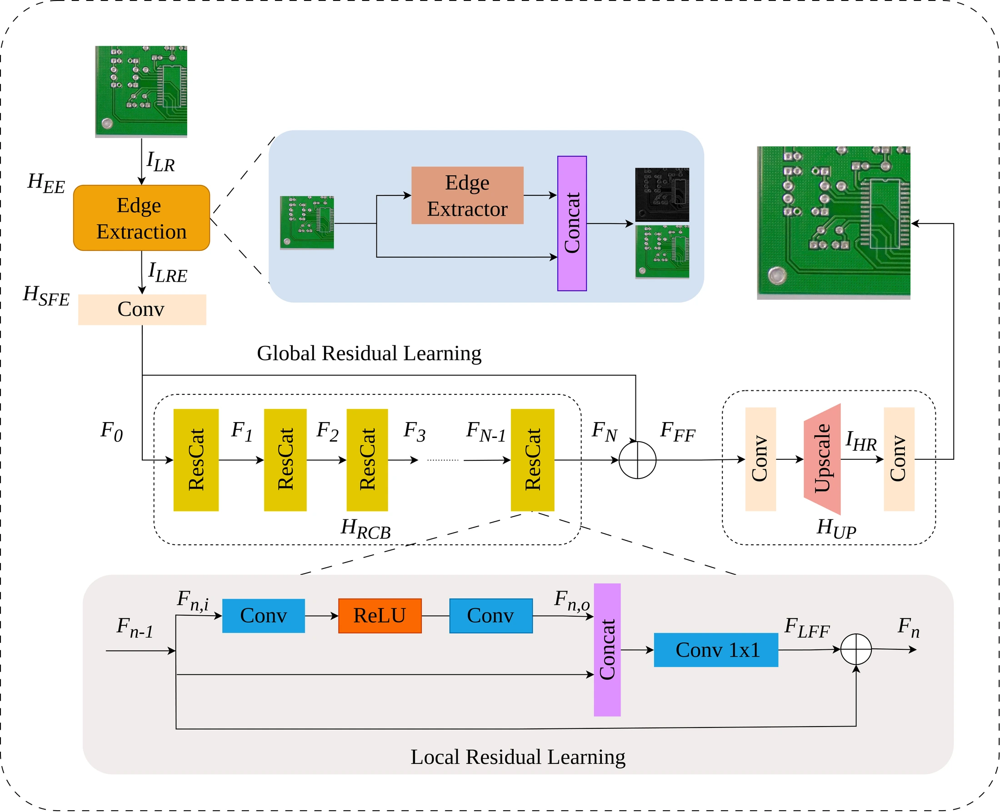
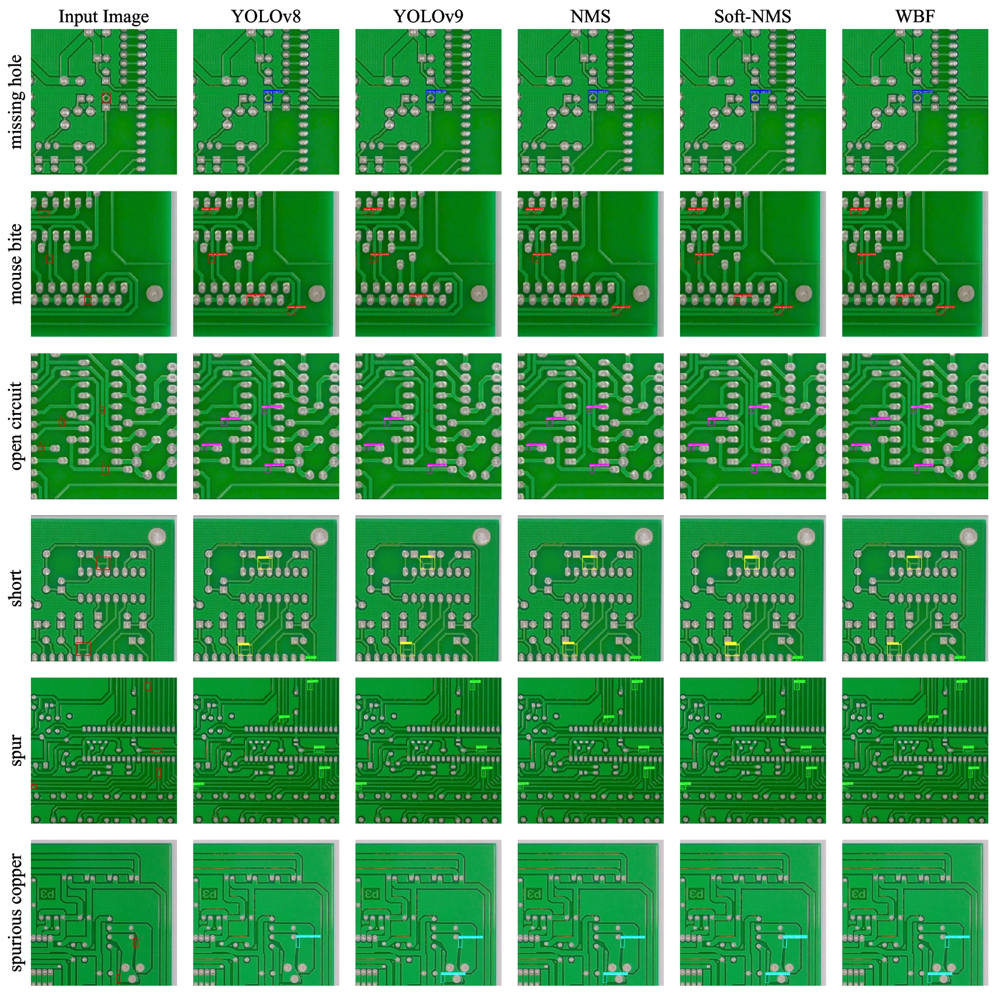

Edge-guided reconstruction
Edge features guide super-resolution toward fine boundaries that matter for PCB defect inspection.
ESRPCB: An Edge Guided Super-Resolution Model and Ensemble Learning for Tiny Printed Circuit Board Defect Detection
Engineering Applications of Artificial Intelligence · 2025
1 Faculty of Electronics and Telecommunications, VNU University of Engineering and Technology, Vietnam
2 Faculty of Mechatronics, SMAE, Hanoi University of Industry, Vietnam
* Corresponding author: Xiem HoangVan.
Enhancing tiny PCB defect detection by recovering structural detail before recognition.
ESRPCB combines edge-guided super-resolution with ensemble learning to improve tiny printed circuit board defect detection. Edge information guides an EDSR-based reconstruction network with Residual Concatenation (ResCat) blocks, helping preserve fine structural details in low-resolution PCB images. The reconstructed images are then processed by defect detectors, and ensemble fusion combines their predictions. Experiments evaluate reconstruction quality and detection accuracy, demonstrating the benefit of edge guidance and ensemble learning in low-resolution inspection scenarios.
Edge features guide super-resolution toward fine boundaries that matter for PCB defect inspection.
Residual Concatenation blocks combine additive and concatenation connections for feature preservation.
Fusion of detector predictions further improves tiny PCB defect detection after super-resolution.
Edge extraction, shallow feature extraction, ResCat blocks, and upscaling reconstruct high-resolution PCB images. Ensemble-based defect detection then combines complementary predictions from the reconstructed images.

ESRPCB reports an average PSNR of 30.54 dB, an improvement of 0.42 dB over EDSR. The paper reports mAP50 of 0.965 for ESRPCB-based detection and 0.977 with the ensemble approach. The visual examples compare common PCB defects, including missing hole, mouse bite, open circuit, short, spur, and spurious copper.

@article{2025eaaiesrpcb,
title = {{ESRPCB}: An Edge Guided Super-Resolution Model and Ensemble Learning for Tiny Printed Circuit Board Defect Detection},
author = {HoangVan, Xiem and Dinh, Dang Bui and Canh, Thanh Nguyen and Nguyen, Van-Truong},
journal = {Engineering Applications of Artificial Intelligence},
year = {2025},
volume = {159},
pages = {111547},
doi = {10.1016/j.engappai.2025.111547}
}